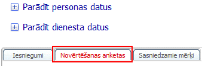
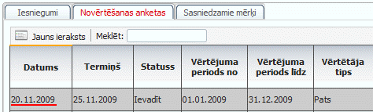
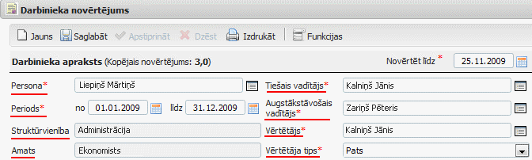
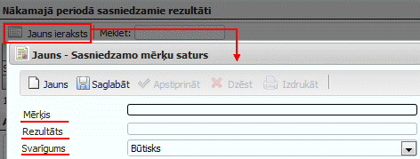
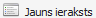
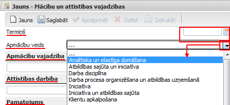
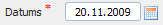
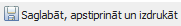

Novērtēšanas anketas¶
Šis darba režīms ir paredzētsNovērtēšanas anketas aizpildīšanai Darbiniekam.
1. Novērtēšanas anketas atvēršana¶
Pieslēdzoties sistēmai, novērtēšanas anketu būs iespējams aizpildīt no darba režīma: Personāla pašapkalpošanās->Personas kartīte->Novērtēšanas anketas:
{kind=link}
Nospiežot uz izvēlētāssadaļas “Novērtēšanas anketas”, tiks atvērta informācijaar sagatavotoanketas formu. Lai uzsāktu anketas aizpildīšanu, nepieciešamsnospiest uz jebkuras kolonnas ierakstu:
{kind=link}
Pēc šo darbību veikšanas, tiksatvērta Darbinieka novērtējuma anketa.
2. Novērtēšanas anketas aizpildīšana¶
Pamatdati par pašu darbinieku (darbinieka apraksts)jau ir ievadīti un atkārtotiNAV jāpārvada:
{kind=link}
Aizpildāmās sadaļas Darbinieka novērtējuma anketā:
1) Nākamajā periodā sasniedzamie rezultāti -> Lai pievienotu jaunu ierakstu, nepieciešams nospiest pogu “Jauns ieraksts” -> Un tiks atvērts jauns Sasniedzamo mērķu satura logs, kurā nepieciešams ievadīt Mērķi, sagaidāmo Rezultātu un norādīt Svarīguma pakāpi, ar bultiņas palīdzību izvēloties to no saraksta:
{kind=link}
Lai saglabātu pievienoto ierakstu nepieciešams nospiest pogu .. image:: images_ozols/26381.png
- scale
100%
. Lai atkārtoti pievienotu jaunu - nākamo ierakstu, nepieciešams nospiest pogu:
{kind=link}
.
2) Amata pienākumu izpilde atbilstoši amata aprakstā noteiktajām prasībām -> Obligāti aizpildāms lauks, kurbrīvā formā nepieciešams ievadīt novērtējuma saturu, labajā pusē izvēloties atbilstošo vērtējumu no saraksta:

3) Rezultātu sasniegšanu un amata pienākumu izpildi veicinošie un kavējošie faktori -> Obligāti aizpildāmi lauki, kur brīvā formā nepieciešams ievadi veicinošos un kavējošos faktorus.
4) Kompetences -> Obligāti aizpildāmie lauki atzīmēti ar .. image:: images_ozols/26384.png
- scale
100%
brīvā formā nepieciešams ievadīt satura informāciju par katru no
kompetencēm. Iepazīties ar katras kompetences pilnu aprakstuiespējams, ar peli uzejot uz atbilstošās kompetences nosaukumu:

Katras kompetences apraksta lauka labajā pusē nepieciešams norādīt vērtējumu, izvēloties to no saraksta (nospiežot uz bultiņas tiek atvērts pilns vērtējumu saraksts).
5) Apmācības -> Lai pievienotu jaunu ierakstu, nepieciešams nospiest pogu “Jauns ieraksts” -> Un tiks atvērts jaunsMācību un attīstības vajadzībusatura logs, kurā nepieciešams ievadīt mācību termiņu, no saraksta izvēlēties Apmācību veidu, brīvā formā atbilstošajos laukos ierakstīt: Apmācību vajadzību, Attīstības darbību, kā arī Pamatojumu.
{kind=link}
Lai saglabātu pievienoto ierakstu nepieciešams nospiest pogu .. image:: images_ozols/26381.png
- scale
100%
. Lai atkārtoti pievienotu jaunu - nākamo ierakstu, nepieciešams nospiest pogu:
.
6) Nepieciešamās izmaiņas amata aprakstā ->Obligāti aizpildāms lauks, kur brīvā formā nepieciešams ievadi informāciju par nepieciešamajām izmaiņām esošajā amata aprakstā.
7) Iespējamā karjeras attīstība -> Obligāti aizpildāms lauks, kur brīvā formā nepieciešams ievadi informāciju par iespējamo karjeras attīstību.
8) Nozīmīgākais, kas nepieciešams, lai Sabiedrībā paaugstinātos darba efektivitāte -> Obligāti aizpildāms lauks, kur brīvā formā nepieciešams ievadi informāciju.
3. Novērtēšanas anketas saglabāšana, apstiprināšana un izdruka¶
Ja visa nepieciešamā informācija ir aizpildīta, tad anketai nepieciešams norādīt parakstīšanas datumu :
{kind=link}
Pirms anketas saglabāšanas, apstiprināšanas un drukāšanas -> Nepieciešams pārliecināties vai visa informācija ir aizpildīta.

Tiklīdz anketa tiek apstiprināta, to vairsNAV iespējams labot. Ja nepieciešams aizpildīto anketu saglabāt, bet vēl neapstiprināt, nepieciešams izmantot anketas augšējā daļā pieejamo pogu: .. image:: images_ozols/26381.png
- scale
100%
Ja visa informācija ir pārbaudīta un atbilstošie lauki aizpildīt, lai pilnībā pabeigtu anketas aizpildīšanu, nepieciešams nospiest pogu:
{kind=link}
Pēc pogas nospiešanas, tiks uzdots kontroljautājums “Vai saglabāt, apstiprināt un izdrukāt ierakstu?” -> atbildot apstiprinoši, tiks apstiprināta aizpildītā anketa - tā vairs darbiniekam nebūs pieejama labošanai, un uz darbinieka un tiešā vadītāja e-pastiem tiks nosūtīta informācija par to, ka darbinieks anketu ir aizpildījis.
Lai izdrukātu aizpildīto anketu, nepieciešams izmantot anketas augšējā daļā pieejamo pogu:
{kind=link}